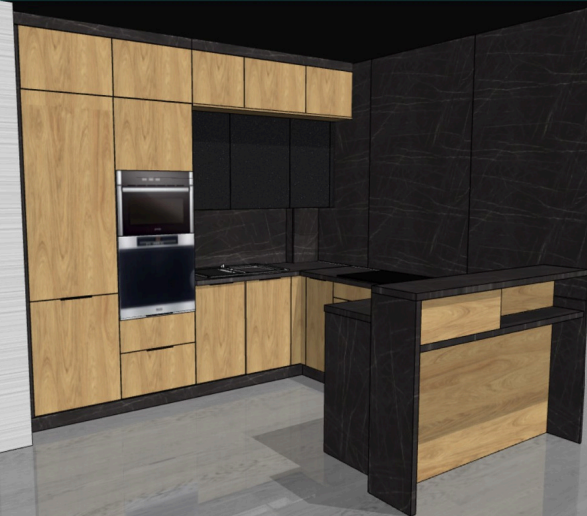

Meble kuchenne KAM to połączenie nowoczesnego designu, wysokiej jakości wykonania oraz funkcjonalnych rozwiązań. Producent od wielu lat tworzy kolekcje cenione przez klientów i ekspertów branży meblowej.
Korzystamy z rozwiązań KAM, ponieważ oferują trwałość, estetykę oraz możliwość idealnego dopasowania kuchni do potrzeb użytkownika.
W 2025 roku rozpoczęliśmy współpracę z RARO, marką w której innowacja łączy się z elegancją, a funkcjonalność z najwyższą jakością. To produkty wybrane dla tych, którzy widzą w przestrzeni coś więcej niż ściany, sufity i meble. Dla tych, którzy szukają doskonałości w każdym detalu i nie uznają kompromisów.
WYBÓR NAJLEPSZYCH MAREK – MATERIAŁY, KTÓRE INSPIRUJĄ nas i naszych klientów, do wyboru: FENIX – ultra matowe, aksamitne powierzchnie wykonane z oryginalnego innowacyjnego materiału; CLEAF – strukturalne płyty i fronty meblowe o wyjątkowej głębi i fakturze; INOXA – funkcjonalne i praktyczne systemy cargo i akcesoria do przechowywania w kuchni i garderobie; ARPA – wysokiej jakości blaty kompaktowe i laminaty o unikalnym wzornictwie; HOMAPAL - laminaty z naturalnego metalu, które wyróżniają się najodważniejszymi strukturami; BLACK LINE – subtelne oświetlenie meblowe, które podkreśla charakter wnętrza; CITTERIO GIULIO – ekskluzywne uchwyty i gałki, które nadają meblom niepowtarzalny elegancki styl; VETRO – matowe fronty z efektem szkła organicznego w najmodniejszy kolorach ziemi
Wykonujemy darmowe projekty od razu po pomiarze!
Korzystamy z najlepszego dostępnego programu na rynku.
